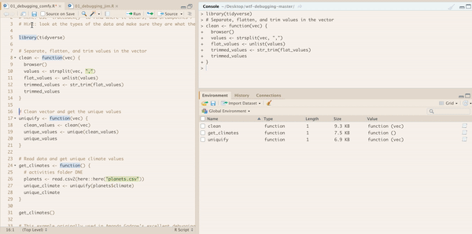

Chapter 22 Debugging
Resources on debugging:
22.3 Lazy evaluation
rlang::last_trace() in the example doesn’t show anything informative, really. What is this function and when is it helpful?
It’s weird how in the book it says > Error: Can’t show last error because no error was recorded yet
That’s not what you get in RStudio, but is what you get with a reprex….
rlang::last_trace prints the traceback/call stack in reverse order, but more visibly displays branching AST:
f <- function(a) g(a)
g <- function(b) h(b)
h <- function(c) i(c)
i <- function(d) {
if (!is.numeric(d)) {
stop("`d` must be numeric", call. = FALSE)
}
d + 10
}
j <- function() k()
k <- function() stop("Oops!", call. = FALSE)
f(j())#> Error: Oops!
#> Backtrace:
#> 1. rlang::with_abort(f(j()))
#> 7. global::j()
#> 8. global::k()#> Error: Oops!
#> Backtrace:
#> 1. rlang::with_abort(f(j()))
#> 7. global::j()
#> 8. global::k()#> <error/rlang_error>
#> Oops!
#> Backtrace:
#> x
#> 1. +-rlang::with_abort(f(j()))
#> 2. | \-base::withCallingHandlers(...)
#> 3. +-global::f(j())
#> 4. | \-global::g(a)
#> 5. | \-global::h(b)
#> 6. | \-global::i(c)
#> 7. \-global::j()
#> 8. \-global::k()The errors render like how it does in the book if I use a reprex, but I get more verbose output in RStudio, which I’ve copy-pasted above. Not sure if this has to do with my options and/or RStudio settings. But i think it’s useful to see how rlang::last_trace() prints more detailed output like this.
22.4.1 broswer
Can we create a video or gif using browser?

22.4.2.1 Breakpoints
There are a few unusual situations in which breakpoints will not work
What are these fringe situations?
They don’t work in non-saved files, or Shiny Apps
Can we create a video or gif using breakpoints?
22.1 22.4.2.2 recover
Can we create a video or gif using recover?
22.4.2.3 debug
Can we create a video or gif using debug?
Can we create a video or gif using utils::setBreakpoint?
22.5 Non-interactive debugging
Sometimes
callr::r(f, list(1, 2))can be useful;
What is this? When is it useful?
This statement really seems not fully fleshed out… it provides no explanation what the function is and why it is “helpful” and he demonstrates it with the use of some anonymous function
22.5.1 dump.frames
Can we run this chunk, maybe also making a gif?
Debug Pipe
# debug pipe
`%d>%` <- function(e1, e2) {
x <- as.character(substitute(e2)[[1]])
debugonce(get(x, parent.frame()))
eval(substitute(e1 %>% e2), parent.frame())
}
mtcars %>%
select(mpg, cyl) %d>% # debug group_by
group_by(cyl) %>%
summarise(mpg = mean(mpg))
mtcars %>%
select(mpg, cyl) %d>% # debug group_by
group_by(cyl) %>%
summarise(mpg = mean(mpg))
#> debugging in: group_by(., cyl)
#> debug: {
#> UseMethod("group_by")
#> }
#> debug: UseMethod("group_by")
#> debugging in: group_by.data.frame(., cyl)
#> debug: {
#> groups <- group_by_prepare(.data, ..., .add = .add)
#> grouped_df(groups$data, groups$group_names, .drop)
#> }
#> debug: groups <- group_by_prepare(.data, ..., .add = .add)
#> debug: grouped_df(groups$data, groups$group_names, .drop)
#> exiting from: group_by.data.frame(., cyl)
#> exiting from: group_by(., cyl)
#> `summarise()` ungrouping output (override with `.groups` argument)
#> # A tibble: 3 x 2
#> cyl mpg
#> <dbl> <dbl>
#> 1 4 26.7
#> 2 6 19.7
#> 3 8 15.122.2 Edic Code from Another function
library(ggplot2)
# imagine we want to edit ggplot2::aes
# copied from the console and then edited
aes <- function (x, y, ...)
{
message("In my new aes") #added this
exprs <- enquos(x = x, y = y, ..., .ignore_empty = "none") # changed .ignore_empty
aes <- new_aes(exprs, env = parent.frame())
rename_aes(aes)
}
# crap! My function doesn't know how to find the non-exported ggplot2 functions
ggplot(mtcars) + aes(x = mpg, y = cyl) + geom_point()
#> In my new aes
#> Error in new_aes(exprs, env = parent.frame()): could not find function "new_aes"
# we can fix that!
environment(aes) <- asNamespace("ggplot2")
# success!
ggplot(mtcars) + aes(x = mpg, y = cyl) + geom_point()
#> In my new aes
Bonus tip
Be careful if you have variables named f n s or c while debugging. I very often will want to investigate them by just running e.g. > f in the console, expecting it to print f. but instead it finishes the current loop. print(f) instead!